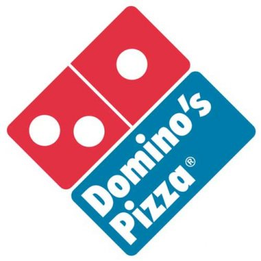

Curriculum Vitae
Expériences
Developpeur web Interface web pour acquisitions de données en temps réel.Technologies Utilisées : WebDev, Ftp.

Employé polyvalent Livraisons, fabrication et prise de commandes.Parallèlement aux études
Formations
Master InformatiqueCursus AIGLE, master orienté applications mobiles et technologies du web
Licence InformatiqueCursus général
DUT Informatique
BAC Scientifique
Compétences
AutresTravail en équipe, Expérience monde du travail, outils de gestion
Contact

04 66 01 28 20
06 64 17 24 12
bastienvanderchmitt@gmail.com
Loisirs
Musique, Voyages, Sports (ski, tennis, volley-ball)
Possede les permis A et B